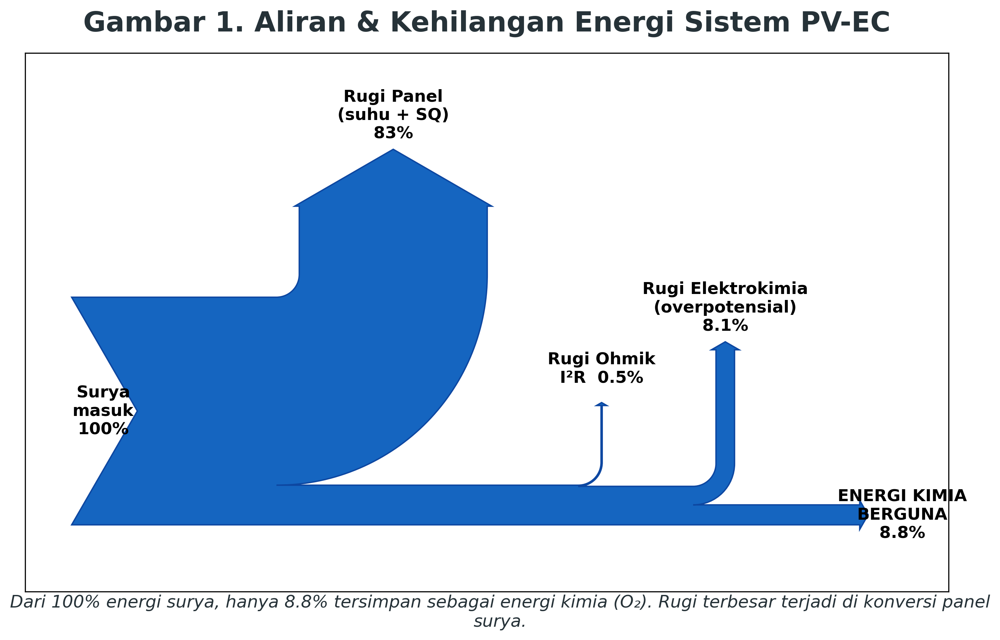
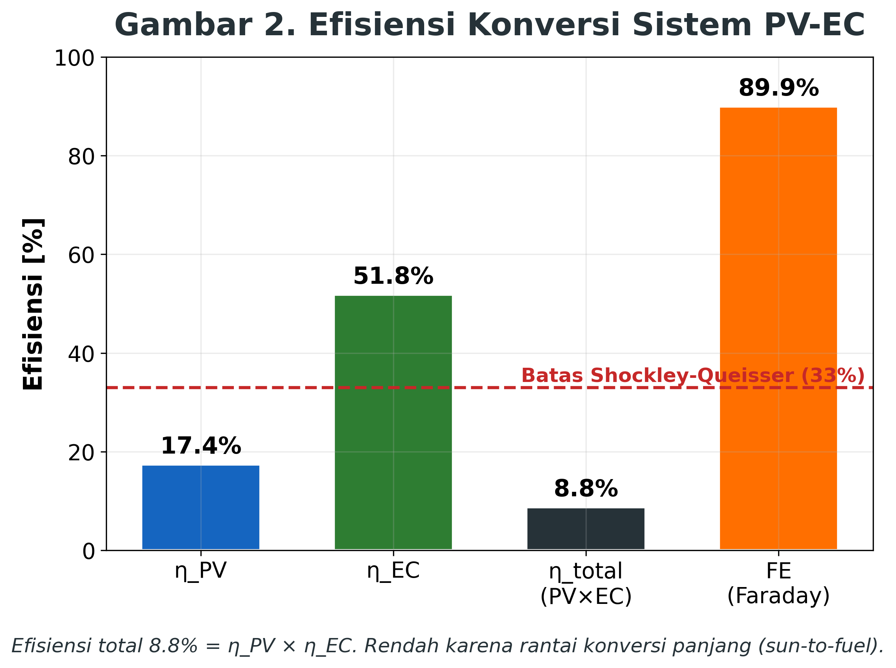
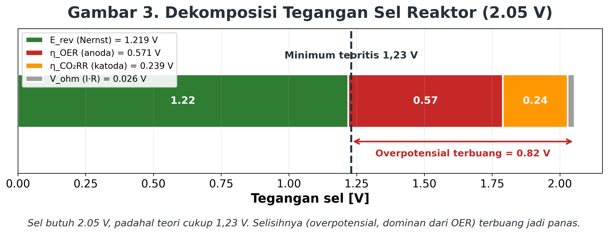
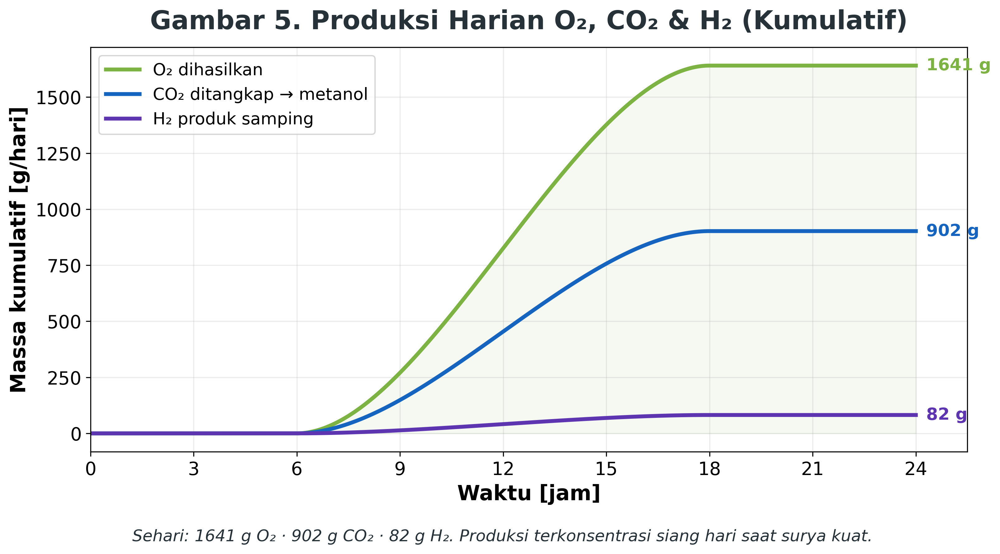
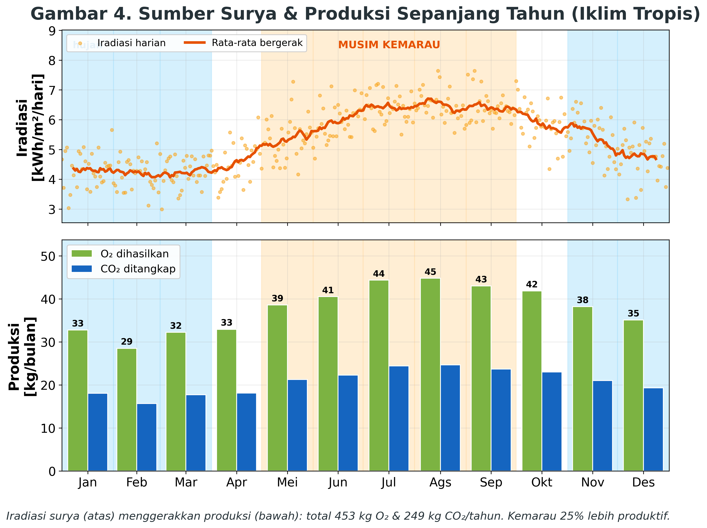
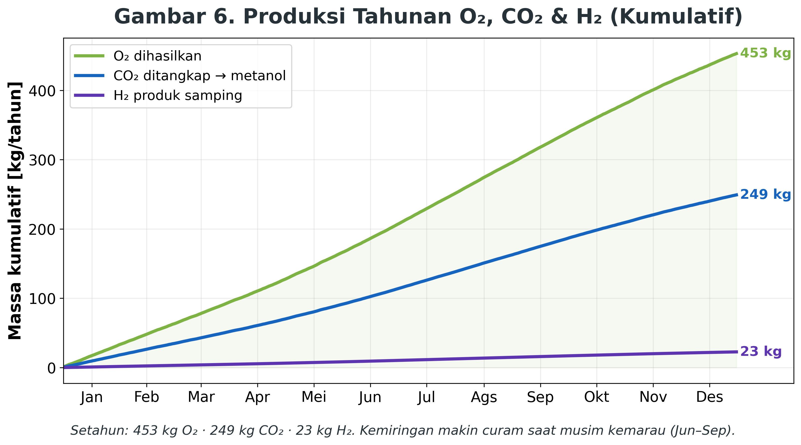
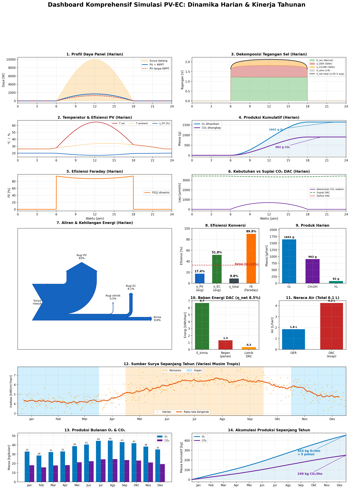

Integrasi Panel Surya pada Sistem Carbon Capture untuk Konversi CO₂ menjadi Oksigen melalui Artificial Photosynthesis
Proyek Akhir Mata Kuliah Pengantar Energi. Program Studi S1 Fisika, Fakultas Matematika dan Ilmu Pengetahuan Alam, Universitas Padjadjaran.
Halaman Judul
| Nama | NPM |
|---|---|
| Sandy Fauzi Amrulloh | 140310240054 |
| Aleasandrina Senjaya Putri | 140310240076 |
| Khansa Humaira Adhari | 140310240068 |
| Muhammad Qaisha Rosyada | 140310240040 |
Abstrak
Penelitian berbasis simulasi ini memodelkan kinerja sistem terintegrasi Fotovoltaik-Elektrokimia (Photovoltaic-Electrochemical, PV-EC) yang menggabungkan pembangkit listrik tenaga surya, reaktor elektrokimia, dan unit penangkapan karbon langsung dari udara (Direct Air Capture, DAC) untuk mereduksi CO₂ menjadi bahan bakar terbarukan sekaligus menghasilkan O₂. Model dikembangkan sebagai simulasi numerik time-series beresolusi satu menit yang mengimplementasikan tujuh persamaan tata kelola secara dinamis, meliputi konversi fotovoltaik dengan koreksi termal, kinetika elektroda Butler-Volmer/Tafel, persamaan Nernst, Hukum Faraday, serta neraca massa DAC. Dua skenario dijalankan, yaitu skenario harian (24 jam) dan skenario tahunan (365 hari) dengan variasi musim iklim tropis. Untuk konfigurasi panel 10 m², simulasi memperoleh efisiensi konversi sun-to-fuel sebesar 8,8% (η_net 8,5% dengan beban regenerasi DAC), dengan produksi O₂ 1.641 g per hari, penangkapan CO₂ 902 g per hari (terkonversi menjadi metanol), dan H₂ 82 g per hari sebagai produk samping reaksi evolusi hidrogen. Pada skala tahunan diperoleh 453 kg O₂, 249 kg CO₂ tertangkap, dan 22,6 kg H₂, dengan produktivitas musim kemarau 25% lebih tinggi dibandingkan musim hujan. Hasil ini konsisten dengan rentang efisiensi sun-to-fuel pada literatur (5 sampai 15%) dan menegaskan kelayakan fisis sistem sekaligus mengidentifikasi keterbatasan utamanya, yaitu overpotensial anoda, selektivitas katoda terbatas, beban energi regenerasi DAC, serta konsumsi air yang tinggi.
Kata kunci: fotovoltaik-elektrokimia, artificial photosynthesis, direct air capture, reduksi CO₂, efisiensi sun-to-fuel.
BAB I. PENDAHULUAN
1.1 Latar Belakang
Peningkatan konsentrasi gas rumah kaca, khususnya karbon dioksida (CO₂), di atmosfer akibat pembakaran bahan bakar fosil telah memicu perubahan iklim global yang semakin mengkhawatirkan. Menurut Prats-Salvado dkk. (2024), teknologi penangkapan karbon langsung dari udara atau Direct Air Capture (DAC) merupakan salah satu pendekatan paling menjanjikan untuk mengurangi konsentrasi CO₂ atmosfer secara aktif. Tantangan utama teknologi ini adalah kebutuhan energi operasionalnya yang sangat besar, menggunakan listrik dari pembangkit fosil untuk menangkap emisi fosil justru menjadi sebuah ironi teknis yang menjadi kendala terbesar dalam masalah iklim.
Di sisi lain, perkembangan teknologi energi terbarukan, terutama Pembangkit Listrik Tenaga Surya (PLTS), membuka peluang untuk mengatasi hambatan tersebut. Panel surya (fotovoltaik) menghasilkan arus searah (DC) bersih yang secara teknis kompatibel untuk menggerakkan sistem DAC maupun reaktor elektrokimia. Lebih jauh, dalam kerangka Artificial Photosynthesis (Fotosintesis Buatan), energi surya tidak hanya digunakan sebagai sumber daya, melainkan juga sebagai pemicu reaksi fotokatalitik yang meniru prinsip fotosintesis alami pada tumbuhan, yaitu menyerap CO₂ dan air (H₂O) untuk menghasilkan oksigen (O₂) dan molekul berenergi tinggi (Wang dan Pornrungroj, 2025).
Konsep integrasi ini dikenal sebagai sistem Fotovoltaik-Elektrokimia (PV-EC). Dalam skema ini, panel surya menyuplai listrik ke reaktor fotoelektrokimia yang bekerja secara dua fungsi sekaligus, yaitu menangkap CO₂ dari udara dan menghasilkan O₂ sebagai produk akhir. Namun, tantangan teknis yang nyata muncul dari sifat keluaran panel surya yang fluktuatif akibat perubahan intensitas cahaya dan suhu. Untuk menjaga stabilitas reaksi di dalam reaktor, diperlukan komponen Maximum Power Point Tracking (MPPT) Charge Controller yang meregulasi tegangan dan arus keluaran panel.
1.2 Rumusan Masalah
Berdasarkan latar belakang di atas, rumusan masalah dalam proyek ini adalah sebagai berikut:
- Bagaimana cara kerja rangkaian kelistrikan sistem PLTS off-grid dalam menyuplai daya DC secara stabil untuk sistem carbon capture dan reaktor artificial photosynthesis?
- Bagaimana cara kerja reaktor artificial photosynthesis dalam mengonversi CO₂ menjadi oksigen (O₂), serta faktor-faktor yang mempengaruhi efisiensinya?
- Bagaimana efisiensi keseluruhan sistem Fotovoltaik-Elektrokimia (PV-EC) dalam mengintegrasikan proses penangkapan dan konversi CO₂, termasuk ditinjau dari potensi kehilangan energi dalam sistem, serta bagaimana hal tersebut mempengaruhi kelayakan penerapannya sebagai solusi berkelanjutan?
- Bagaimana dampak implementasi sistem PV-EC terhadap kualitas udara, khususnya dalam peningkatan kadar oksigen (O₂) di lingkungan sekitar?
1.3 Tujuan Penelitian / Tujuan Proyek
Kajian ini bertujuan untuk:
- Mengetahui cara kerja rangkaian kelistrikan sistem PLTS off-grid dalam menyuplai daya DC secara stabil untuk mendukung operasional sistem carbon capture dan reaktor artificial photosynthesis.
- Mengetahui cara kerja reaktor artificial photosynthesis dalam mengonversi CO₂ menjadi O₂ serta faktor-faktor yang mempengaruhi efisiensinya.
- Mengetahui efisiensi keseluruhan sistem Fotovoltaik-Elektrokimia (PV-EC) dalam mengintegrasikan proses penangkapan dan konversi CO₂, termasuk pengaruh kehilangan energi dalam sistem, serta dampaknya terhadap kelayakan penerapan sistem sebagai solusi berkelanjutan.
- Mengetahui dampak implementasi sistem Fotovoltaik-Elektrokimia (PV-EC) terhadap kualitas udara, khususnya dalam peningkatan kadar oksigen (O₂) di lingkungan sekitar.
BAB II. METODE KAJIAN
2.1 Pendekatan Kajian
Kajian ini menggunakan pendekatan studi literatur dan simulasi berbasis komputasi untuk menganalisis integrasi panel surya dengan sistem carbon capture dan artificial photosynthesis dalam suatu sistem Fotovoltaik-Elektrokimia (PV-EC). Studi literatur dilakukan dengan mengumpulkan dan menelaah berbagai sumber ilmiah berupa jurnal penelitian, buku referensi, serta publikasi terkait teknologi Direct Air Capture (DAC), sistem Pembangkit Listrik Tenaga Surya (PLTS), Maximum Power Point Tracking (MPPT), dan artificial photosynthesis. Hasil kajian literatur digunakan sebagai dasar dalam memahami prinsip kerja sistem, menentukan parameter yang digunakan, serta menyusun model simulasi yang merepresentasikan kondisi operasional sistem secara teoritis.
Berdasarkan hasil kajian tersebut, dilakukan pemodelan sistem yang menggambarkan hubungan antara panel surya, MPPT charge controller, unit carbon capture, dan reaktor artificial photosynthesis. Model kemudian diimplementasikan dalam bentuk simulasi berbasis komputasi untuk mengevaluasi aliran energi dan proses konversi yang terjadi di dalam sistem. Simulasi menggunakan parameter yang diperoleh dari hasil studi literatur, seperti intensitas radiasi matahari, efisiensi panel surya, kapasitas penangkapan CO₂, dan efisiensi reaksi fotoelektrokimia.
Perlu diketahui bahwa kajian ini tidak melibatkan pembangunan prototipe maupun pengujian langsung pada perangkat fisik. Seluruh analisis dilakukan melalui simulasi komputasi yang dirancang untuk menggambarkan performa sistem secara teoritis. Hasil simulasi kemudian digunakan untuk mengevaluasi kemampuan sistem dalam menyediakan daya listrik yang stabil, efektivitas penangkapan dan konversi CO₂ menjadi O₂, potensi kehilangan energi pada setiap tahapan proses, serta kelayakan penerapan sistem PV-EC sebagai solusi berkelanjutan untuk mendukung pengurangan emisi karbon dan peningkatan kualitas udara.
2.2 Konversi Fotovoltaik dan Batas Shockley-Queisser
Sel surya bekerja berdasarkan efek fotovoltaik pada sambungan semikonduktor p-n. Radiasi surya terkuantisasi dalam paket energi (foton); foton dengan energi melebihi celah pita (band gap) material mampu mengeksitasi elektron dari pita valensi ke pita konduksi, menghasilkan pasangan elektron-lubang yang dipisahkan oleh medan listrik internal sambungan p-n sehingga terbentuk arus DC.
Definisi. Batas Shockley-Queisser (SQ), diturunkan oleh Shockley dan Queisser (1961) melalui prinsip detailed balance (kesetimbangan rinci), menyatakan efisiensi konversi maksimum teoretis sebuah sel surya sambungan-tunggal. Nilainya sekitar 33% (puncak sekitar 33,7% pada celah pita optimal sekitar 1,34 eV; silikon dengan E_gap sekitar 1,1 eV mencapai sekitar 32%). Batas ini bersifat fundamental, ia bukan keterbatasan mutu fabrikasi, melainkan konsekuensi fisika ketidaksesuaian antara spektrum surya yang lebar dengan celah pita material yang tunggal dan tetap.
Mekanisme kehilangan. Dua rugi utama bersifat saling berlawanan terhadap pemilihan celah pita:
- Rugi transmisi (sub-celah pita): foton dengan E_foton kurang dari E_gap tidak memiliki energi cukup untuk mengeksitasi elektron sehingga diteruskan tanpa terserap.
- Rugi termalisasi: foton dengan E_foton lebih dari E_gap mengeksitasi elektron, tetapi kelebihan energi (E_foton dikurangi E_gap) terdisipasi sebagai panas ketika elektron berelaksasi ke tepi pita konduksi.
Keduanya menimbulkan dilema celah pita: E_gap kecil menyerap lebih banyak foton namun menghasilkan tegangan rendah (termalisasi besar), sedangkan E_gap besar menghasilkan tegangan tinggi namun menyerap lebih sedikit foton (transmisi besar). Nilai optimum yang menyeimbangkan keduanya menghasilkan batas sekitar 33%. Ditambahkan pula rekombinasi radiatif yang tak terhindarkan (konsekuensi detailed balance: penyerap yang baik juga pemancar yang baik) serta rugi tegangan termodinamik (faktor Boltzmann), sehingga tegangan keluaran selalu lebih rendah daripada tegangan setara celah pita.
| Nasib energi foton | Porsi relatif |
|---|---|
| Diteruskan (E_foton kurang dari E_gap) | sekitar 20% |
| Terdisipasi sebagai panas (termalisasi) | sekitar 30% |
| Rekombinasi radiatif dan rugi tegangan | sekitar 17% |
| Terkonversi menjadi listrik (Batas SQ) | sekitar 33% |
Modul silikon komersial pada praktiknya beroperasi pada efisiensi sekitar 20%, yakni di bawah plafon teoretis akibat rugi tambahan (resistansi seri, refleksi permukaan, dan rekombinasi non-radiatif). Pada model ini efisiensi referensi ditetapkan η_PV,ref = 20%, sedangkan batas SQ 33% digunakan sebagai garis acuan teoretis pada grafik efisiensi. Batas ini hanya dapat dilampaui dengan arsitektur sel tandem/multi-sambungan yang menumpuk beberapa celah pita untuk memanen porsi spektrum yang lebih lebar (lebih dari 40%), namun dengan kompleksitas dan biaya yang jauh lebih tinggi (Rudiyanto dkk., 2023; Rauf dkk., 2023).
2.3 Pengaruh Temperatur terhadap Kinerja Sel Surya
Efisiensi sel surya menurun terhadap kenaikan temperatur karena penyempitan celah pita dan peningkatan laju rekombinasi. Hubungan ini dinyatakan melalui koefisien temperatur β:
$$\eta_\text{PV}(T) = \eta_\text{PV,ref} \cdot \left[\, 1 - \beta \cdot (T_\text{sel} - 25^\circ\mathrm{C}) \,\right]$$dengan β sekitar 0,4 % per °C untuk silikon. Temperatur sel diperkirakan dari temperatur lingkungan dan iradiasi melalui model NOCT (Nominal Operating Cell Temperature):
$$T_\text{sel} = T_\text{amb} + \frac{(\mathrm{NOCT} - 20) \cdot G}{800}$$dengan NOCT sekitar 45 °C. Pada kondisi tengah hari tropis (T_sel sekitar 50 sampai 55 °C), efisiensi efektif turun menjadi sekitar 17%. Faktor ini penting karena Indonesia beriklim panas, sehingga rugi termal tidak dapat diabaikan. Secara mikroskopik, kenaikan temperatur memperkecil celah pita (E_gap) sehingga tegangan rangkaian terbuka (V_oc) menurun, sementara arus hubung-singkat hanya naik tipis; efek netonya adalah penurunan daya dan efisiensi. Implikasi praktisnya, sistem pendinginan/ventilasi panel dan pemilihan lokasi berventilasi baik menjadi pertimbangan desain nyata di iklim tropis, dan menjadi salah satu alasan mengapa efisiensi sistem aktual selalu lebih rendah daripada nilai nameplate panel (Wibowo, 2023; Rudiyanto dkk., 2023).
2.4 Penjejakan Titik Daya Maksimum (MPPT)
Keluaran daya panel bersifat fluktuatif terhadap iradiasi dan temperatur, sehingga kurva arus-tegangan (I-V) memiliki satu titik daya maksimum (Maximum Power Point, MPP) yang berpindah-pindah. Pada kurva I-V, daya (P = V·I) bernilai nol di kedua ujung yaitu pada kondisi hubung-singkat (V = 0) dan rangkaian terbuka (I = 0) dan mencapai maksimum pada satu titik di antaranya. Letak MPP ini bergeser setiap kali iradiasi atau temperatur berubah.
Modul MPPT (Maximum Power Point Tracking) berfungsi menjejak titik tersebut secara aktif melalui konverter DC-DC, MPPT menyesuaikan impedansi beban secara real-time agar panel selalu beroperasi tepat pada MPP. Tanpa penjejakan ini, panel sering bekerja jauh dari MPP sehingga menghasilkan daya suboptimal, fenomena yang disebut mismatch loss, yang dapat mencapai sekitar 25%. Pada model, MPPT diasumsikan ideal sehingga daya yang dipanen setara dengan daya maksimum teoritis panel; perbandingan kasus dengan dan tanpa MPPT divisualkan pada grafik profil daya untuk menonjolkan kontribusinya (Rauf dkk., 2023).
2.5 Termodinamika Elektrokimia: Pemecahan Air dan Persamaan Nernst
Reaksi pemecahan air dan reduksi CO₂ bersifat non-spontan (endergonik, ΔG lebih besar dari nol); reaksi hanya berlangsung bila energi listrik diinjeksikan. Pemecahan air standar menuntut perubahan energi bebas Gibbs ΔG° = 237,13 kJ per mol, ekuivalen dengan potensial sel reversibel minimum:
$$E^{\circ}_\text{rev} = \frac{\Delta G^{\circ}}{n \cdot F} = 1{,}23\ \mathrm{V}$$dengan n = 2 (mol elektron per mol H₂) dan F konstanta Faraday. Potensial reversibel bergantung pada temperatur menurut hubungan tipe Nernst yang diimplementasikan sebagai:
$$E_\text{rev}(T) = 1{,}229 - 0{,}000846 \cdot (T - 298{,}15)\quad [\mathrm{V}]$$sehingga E_rev menurun perlahan seiring kenaikan temperatur reaktor. Potensial reversibel E_rev dapat dimaknai sebagai harga energi minimum reaksi: di bawah nilai ini, reaksi tidak akan berlangsung maju betapapun lamanya ditunggu, karena secara termodinamika tidak menguntungkan. Persamaan Nernst dalam bentuk lengkapnya juga memuat pengaruh konsentrasi (aktivitas) reaktan dan produk terhadap potensial; namun dalam model ini variasi yang dominan adalah temperatur, sehingga bentuk yang diimplementasikan menyederhanakan ketergantungan konsentrasi tersebut. Nilai 1,23 V berlaku pada kondisi standar (25 °C); karena reaktor pada simulasi beroperasi sedikit di atas suhu kamar (sekitar 35 °C), nilai E_rev efektif yang diperoleh adalah 1,219 V. Penting dicatat bahwa 1,23 V hanyalah ambang termodinamika agar reaksi benar-benar berjalan pada laju yang berarti, masih dibutuhkan tegangan tambahan yang dibahas pada subbab berikutnya (Whang dan Apaydin, 2018; Wang dan Pornrungroj, 2025).
2.6 Kinetika Elektroda: Overpotensial, Persamaan Tafel, dan Peran Katalis
Secara praktis, tegangan operasi sel melampaui nilai termodinamika 1,23 V. Selisihnya disebut overpotensial (η), yaitu tegangan tambahan untuk mengatasi hambatan kinetik perpindahan muatan; energi ini terdisipasi sebagai panas. Pada rapat arus tinggi, overpotensial mengikuti persamaan Tafel:
$$\eta(j) = \frac{R \cdot T}{\alpha \cdot F} \cdot \ln\!\left(\frac{j}{j_0}\right)$$dengan R konstanta gas, α koefisien transfer (sekitar 0,5), j rapat arus, dan j₀ rapat arus tukar (exchange current density) yang mencerminkan keaktifan katalis. Persamaan ini menunjukkan bahwa semakin besar arus (misalnya tengah hari), overpotensial semakin tinggi, sehingga efisiensi konversi justru menurun. Reaksi pada dua elektroda adalah:
Anoda Reaksi Evolusi Oksigen (OER):
$$2\,\mathrm{H_2O} \rightarrow \mathrm{O_2} + 4\,\mathrm{H^+} + 4\,e^-$$OER memiliki overpotensial paling besar karena melibatkan perpindahan empat elektron secara berurutan melalui sejumlah spesies antara (OH, O, OOH), sehingga kinetikanya lambat (Nosaka, 2023).
Katoda Reduksi CO₂ (CO₂RR):
$$\mathrm{CO_2} + 6\,\mathrm{H^+} + 6\,e^- \rightarrow \mathrm{CH_3OH} + \mathrm{H_2O}$$Fungsionalisasi permukaan elektroda dengan katalis nanopartikel menaikkan j₀ (terutama pada katoda), menurunkan energi aktivasi, dan menekan overpotensial (Martí dkk., 2023). Pada model, j₀,OER = 10⁻⁶ A per cm² dan j₀,CO₂RR = 5×10⁻⁴ A per cm². Tegangan sel total dihitung sebagai penjumlahan komponen termodinamika, kinetik, dan ohmik:
$$V_\text{sel}(I,T) = E_\text{rev}(T) + \eta_\text{OER}(j) + \eta_\text{CO_2RR}(j) + j \cdot R_\text{ASR}$$dengan R_ASR = 0,5 Ω·cm² adalah resistansi spesifik internal (membran dan elektrolit). Titik operasi (arus I) diperoleh secara iteratif dari kesetimbangan daya P_reaktor = V_stack · I. Rapat arus tukar j₀ menggambarkan keraelan reaksi berlangsung tanpa dorongan eksternal: reaksi dengan j₀ besar (terkatalisis baik) hanya menuntut overpotensial kecil, sedangkan reaksi dengan j₀ sangat kecil seperti OER menuntut overpotensial besar; inilah sebabnya j₀,OER (10⁻⁶ A per cm²) jauh lebih kecil daripada j₀,CO₂RR (5×10⁻⁴ A per cm²). Koefisien transfer α (sekitar 0,5) mencerminkan kesimetrian sawar energi reaksi. Karena overpotensial tumbuh terhadap logaritma arus, menggandakan laju reaksi hanya menuntut tambahan tegangan yang kira-kira tetap; konsekuensi pentingnya, periode beriradiasi tinggi (arus besar, misalnya tengah hari) justru memiliki efisiensi konversi yang lebih rendah. Dengan demikian, tegangan sel V_sel bukanlah konstanta melainkan besaran dinamis yang berubah setiap saat mengikuti arus dan temperatur, inilah salah satu keunggulan utama model ini dibanding pendekatan tegangan tetap.
2.7 Hukum Faraday, Efisiensi Faraday, dan Selektivitas Katoda
Hukum Faraday menghubungkan muatan listrik dengan jumlah mol produk:
$$\dot{n}_\text{produk} = \frac{FE \cdot I}{z \cdot F}$$dengan z jumlah elektron per molekul (z = 4 untuk O₂, z = 6 untuk CO₂/metanol, z = 2 untuk H₂) dan FE efisiensi Faraday (Faradaic Efficiency), yaitu fraksi arus yang benar-benar menghasilkan produk yang dikehendaki. FE tidak konstan: pada rapat arus mendekati arus batas difusi (j_lim), konsentrasi CO₂ di permukaan elektroda menipis (limitasi transpor massa) sehingga FE menurun:
$$FE(j) = FE_\text{maks} \cdot \sqrt{1 - \frac{j}{j_\text{lim}}}\,,\qquad FE_\text{maks} = 0{,}95$$Perbedaan jumlah elektron antarproduk menjelaskan mengapa, untuk arus yang sama, produk terbentuk pada laju yang berbeda: satu molekul O₂ menuntut 4 elektron, metanol 6 elektron, dan H₂ hanya 2 elektron. Dengan kata lain, muatan yang diperlukan untuk membentuk satu molekul metanol setara dengan tiga molekul H₂.
Selektivitas dan Reaksi Evolusi Hidrogen (HER). Pada katoda, CO₂RR berkompetisi dengan HER (Hydrogen Evolution Reaction, 2H⁺ + 2e⁻ → H₂). Akibatnya, hanya sebagian arus faradaik yang terkonversi menjadi metanol. Model menetapkan faktor selektivitas φ = 0,60 (60% arus menjadi CH₃OH; 40% menjadi H₂). Selektivitas yang terbatas ini merupakan tantangan nyata dalam artificial photosynthesis dan meningkatkannya menuntut katalis yang lebih spesifik terhadap CO₂RR. Hidrogen yang terbentuk bukanlah limbah, melainkan bahan bakar bersih (solar fuel) yang turut bernilai. Karena O₂ pada anoda mengikuti total arus faradaik, laju produksi O₂ tidak terpengaruh oleh pergeseran selektivitas katoda. Lebih lanjut, ketika pasokan CO₂ dari unit DAC tidak mencukupi, arus yang semula menuju CO₂RR dialihkan ke HER sehingga kekekalan muatan tetap terjaga dan produksi O₂ tetap konstan (Nosaka, 2023; Martí dkk., 2023).
2.8 Penangkapan Karbon Langsung (DAC) dan Energi Regenerasi
DAC (Direct Air Capture) memisahkan CO₂ langsung dari udara. Skema Liquid DAC (L-DAC) yang dimodelkan menggunakan larutan basa KOH dalam dua siklus:
1. Absorpsi pada kontaktor udara:
$$\mathrm{CO_2} + 2\,\mathrm{KOH} \rightarrow \mathrm{K_2CO_3} + \mathrm{H_2O}$$Laju absorpsi dimodelkan secara transpor massa: r_DAC = k · A_kontaktor · C_CO₂, dengan C_CO₂ konsentrasi molar CO₂ udara (sekitar 420 ppm).
2. Regenerasi (kalsinasi) pada sekitar 900 °C untuk melepaskan CO₂ murni. Tahap ini menuntut kalor besar; pada model, kebutuhan energi panas regenerasi ditetapkan q_regen sekitar 1,46 kWh per kg CO₂ (sekitar 5,25 GJ per ton). Energi ini dipasok dari kolektor surya termal terpisah, sehingga efisiensi sistem net dihitung dengan memasukkan beban tersebut:
$$\eta_\text{net} = \frac{E_\text{kimia}}{E_\text{surya} + E_\text{regen} / \eta_\text{termal}}$$L-DAC juga mengonsumsi air dalam jumlah signifikan akibat evaporasi pada kontaktor, yakni sekitar 4,7 kg H₂O per kg CO₂ tertangkap. Kedua siklus tersebut berjalan berkesinambungan: larutan KOH yang telah jenuh oleh karbonat diregenerasi melalui kalsinasi agar dapat dipakai ulang, sementara CO₂ murni hasil pelepasan dialirkan ke katoda reaktor sebagai umpan reaksi CO₂RR. Beban kalor kalsinasi merupakan komponen energi terbesar pada DAC; bila diabaikan, efisiensi sistem akan tampak lebih tinggi daripada kenyataannya. Karena itulah model membedakan η_total (tanpa beban DAC) dari η_net (dengan beban DAC). Konsumsi air yang tinggi, yang terutama berasal dari evaporasi pada kontaktor udara terbuka, menjadi kendala fisik utama penerapan L-DAC di wilayah panas dan kering, dan menjadi argumen kuat bagi penempatan fasilitas di kawasan pesisir yang dapat diintegrasikan dengan unit desalinasi bertenaga surya (Keith dkk., 2018; Prats-Salvado dkk., 2024).
2.9 Metrik Tekno-ekonomi: LCOP versus LCOD
Dua metrik biaya digunakan untuk mengevaluasi kelayakan ekonomi DAC, dan keduanya kerap tertukar.
LCOP (Levelized Cost of Produced CO₂) adalah biaya rata-rata per ton CO₂ yang dihasilkan/ditangkap oleh sistem, tanpa memperhitungkan emisi tak langsung yang muncul selama proses. Metrik ini cenderung menampilkan biaya yang lebih rendah karena hanya melihat keluaran kotor.
LCOD (Levelized Cost of Removed CO₂) adalah biaya rata-rata per ton CO₂ yang benar-benar dihilangkan dari atmosfer secara neto, dengan memperhitungkan emisi tak langsung selama proses. Metrik ini lebih representatif terhadap dampak iklim sebenarnya.
Sebagai ilustrasi, sebuah fasilitas DAC bertenaga gas alam yang menangkap 100 kg CO₂ namun melepaskan 30 kg CO₂ baru dari pembakaran akan dinilai murah menurut LCOP (basis 100 kg) tetapi jauh lebih mahal menurut LCOD (basis 70 kg neto). Sebaliknya, fasilitas bertenaga surya nyaris tidak menambah emisi proses sehingga LCOP mendekati LCOD. Dengan demikian, LCOD merupakan tolok ukur yang lebih adil untuk membandingkan kelayakan teknologi penangkapan karbon, dan sistem PV-EC bertenaga surya menunjukkan keunggulan justru ketika dinilai dengan metrik ini (Prats-Salvado dkk., 2024).
2.10 Nomenklatur dan Parameter Model
| Simbol/Singkatan | Definisi | Nilai | Satuan | Sumber |
|---|---|---|---|---|
| η_PV,ref | Efisiensi PV referensi @25 °C | 20 | % | Rudiyanto 2023 |
| Batas SQ | Batas Shockley-Queisser | sekitar 33 | % | Rudiyanto 2023 |
| β | Koefisien temperatur silikon | 0,4 | % per °C | Wibowo 2023 |
| NOCT | Nominal Operating Cell Temperature | 45 | °C | Wibowo 2023 |
| G_STC | Iradiasi puncak (STC) | 1000 | W per m² | Rudiyanto 2023 |
| A_panel | Luas panel | 10 | m² | konfigurasi |
| V_bus | Tegangan bus DC | 48 | V | Rauf 2023 |
| R_kabel | Resistansi kabel | 0,05 | Ω | |
| E°_rev | Potensial reversibel pemecahan air | 1,23 | V | Whang 2018 |
| α | Koefisien transfer muatan | 0,5 | Nosaka 2023 | |
| j₀,OER | Rapat arus tukar OER | 10⁻⁶ | A per cm² | Nosaka 2023 |
| j₀,CO₂RR | Rapat arus tukar CO₂RR | 5×10⁻⁴ | A per cm² | Martí 2023 |
| R_ASR | Resistansi spesifik internal | 0,5 | Ω·cm² | |
| N_sel | Jumlah sel seri (stack) | 5 | konfigurasi | |
| A_elektroda | Luas elektroda efektif | 2000 | cm² | konfigurasi |
| FE_maks | Efisiensi Faraday maksimum | 95 | % | Martí 2023 |
| j_lim | Rapat arus batas transpor massa | 0,50 | A per cm² | |
| φ | Selektivitas katoda (CO₂RR) | 60 | % | Martí 2023 |
| z_O₂ / z_CO₂ / z_H₂ | Elektron per molekul | 4 / 6 / 2 | Nosaka 2023 | |
| q_regen | Energi panas regenerasi DAC | 1,46 | kWh per kg | Keith 2018 |
| H₂O_DAC | Konsumsi air DAC | 4,7 | kg per kg | Prats 2024 |
BAB III. HASIL DAN PEMBAHASAN
3.1 Hasil Kajian
3.1.1 Hasil Skenario Harian
| Besaran | Nilai | Interpretasi fisis |
|---|---|---|
| Energi surya datang | 76,4 kWh | Total iradiasi yang diterima 10 m² selama satu hari |
| Energi listrik PV | 13,3 kWh (17,4%) | η_PV turun dari 20% akibat efek termal panel |
| Energi tiba di reaktor | 12,9 kWh (16,9%) | Setelah dikurangi rugi ohmik kabel |
| Energi kimia | 6,7 kWh (8,8%) | Energi tersimpan dalam ikatan kimia produk |
| E_rev (Nernst) | 1,219 V | Potensial reversibel pada sekitar 35 °C |
| η_OER | 0,571 V | Overpotensial anoda terbesar (transfer 4 elektron) |
| η_CO₂RR | 0,239 V | Overpotensial katoda lebih kecil (katalis nanopartikel) |
| V_sel | 2,054 V | E_rev + η_OER + η_CO₂RR + V_ohm |
| η_PV rata-rata | 17,4% | Di bawah batas SQ 33% dan η_ref 20% |
| η_EC rata-rata | 51,8% | = (E_rev / V_sel) · FE |
| η_total | 8,8% | Efisiensi sun-to-fuel (tanpa beban DAC) |
| η_net | 8,5% | Termasuk energi regenerasi DAC |
| FE rata-rata | 89,9% | Di bawah FE_maks 95% akibat transpor massa |
| O₂ dihasilkan | 1.641 g (51 mol; 1.148 L) | Setara serapan sekitar 6 pohon dewasa |
| CO₂ ditangkap (menjadi CH₃OH) | 902 g (20 mol) | Terkonversi menjadi metanol (selektivitas 60%) |
| H₂ produk samping | 82 g (41 mol) | Dari HER, juga solar fuel |
| Kebutuhan air | 6,1 L | OER 1,8 L + DAC 4,2 L |
Distribusi rugi energi menunjukkan bahwa kehilangan terbesar terjadi pada tahap konversi fotovoltaik (82,6%), sesuai konsekuensi Batas Shockley-Queisser yang diperparah efek termal tropis. Pada reaktor, overpotensial anoda (OER) mendominasi karena karakteristik perpindahan empat elektronnya, sehingga tegangan operasi 2,054 V jauh melampaui 1,23 V teoretis; selisih ini langsung menurunkan efisiensi elektrokimia menjadi 51,8%. Efisiensi sun-to-fuel total 8,8% berada dalam rentang yang dilaporkan literatur (5 sampai 15%) dan menegaskan bahwa konversi surya menjadi bahan bakar memang lebih rendah dibandingkan konversi menjadi listrik; kompensasinya adalah kemampuan penyimpanan energi jangka panjang dalam bentuk ikatan kimia. Penerapan selektivitas katoda menghasilkan dua produk bernilai, yakni metanol dan hidrogen, sehingga sistem berfungsi ganda sebagai penangkap karbon sekaligus penghasil bahan bakar.
3.1.2 Hasil Skenario Tahunan
| Besaran | Nilai | Interpretasi fisis |
|---|---|---|
| Faktor kecerahan rata-rata | 0,70 | Rata-rata kondisi langit setahun |
| Iradiasi rata-rata | 5,34 kWh per m² per hari | Konsisten dengan data Indonesia (4,5 sampai 5,5) |
| η_total tahunan | 9,5% | Sedikit berbeda dari harian akibat variasi termal musiman |
| η_net tahunan | 9,1% | Termasuk beban regenerasi DAC |
| O₂ per tahun | 453 kg | Setara serapan sekitar 5 pohon dewasa |
| CO₂ tertangkap per tahun | 249 kg | Terkonversi menjadi metanol |
| H₂ per tahun | 22,6 kg | Produk samping HER |
| Kebutuhan air per tahun | 1.680 L | OER 510 L + DAC 1.171 L |
| Selisih musiman (kemarau vs hujan) | +25% | Kemarau lebih produktif |
Produktivitas mengikuti pola musiman berbentuk lonceng dengan puncak pada Agustus dan titik terendah pada Februari, sejalan dengan profil kecerahan. Selisih +25% antara kemarau dan hujan menegaskan ketergantungan sistem terhadap kondisi cuaca, yang menjadi pertimbangan penting bagi implementasi nyata. Efisiensi tahunan (9,5%) sedikit lebih tinggi dari harian karena rugi ohmik yang bersifat kuadratik terhadap arus berkurang pada hari-hari beriradiasi rendah.
3.1.3 Diagram Alir Program Tahunan
Skenario tahunan dibangun dengan menjalankan mesin fisika harian sebanyak 365 kali. Setelah inisiasi parameter, program membangun pola musim untuk 365 hari, lalu untuk setiap hari ke-d (selama d kurang dari 365) menjalankan mesin harian dengan masukan kecerahan musiman s dan temperatur T, menyimpan keluaran harian, dan menaikkan indeks hari. Setelah seluruh hari selesai, hasil diagregasi per bulan dan per tahun, kemudian ringkasan dan grafik ditampilkan.
3.1.4 Visualisasi Hasil
Simulasi menghasilkan dua kelompok berkas grafik, yaitu tujuh grafik skenario harian dari
Simulasi.py dan tiga grafik skenario tahunan dari Simulasi_Tahunan.py.
| Berkas | Konten |
|---|---|
| 1_profil_daya.png | Profil daya dan temperatur sel sepanjang hari |
| 2_tegangan_sel.png | Dekomposisi tegangan sel (E_rev, η_OER, η_CO₂RR, V_ohm) |
| 3_sankey_energi.png | Diagram Sankey aliran dan kehilangan energi |
| 4_efisiensi.png | Diagram batang efisiensi (η_PV, η_EC, η_total, FE) |
| 5_produksi.png | Akumulasi produksi O₂ dan CO₂ harian |
| 6_faraday_dac.png | Efisiensi Faraday dinamis dan neraca suplai DAC |
| 7_neraca_lengkap.png | Neraca produk, beban energi DAC, dan neraca air |
| Berkas | Konten |
|---|---|
| tahunan_1_resource.png | Sumber daya surya sepanjang tahun (musim kemarau/hujan) |
| tahunan_2_bulanan.png | Produksi bulanan O₂ dan CO₂ (puncak Agustus) |
| tahunan_3_kumulatif.png | Akumulasi produksi tahunan |
Enam grafik utama bergaya poster yang dihasilkan simulasi disajikan berikut ini, mencakup skenario harian (Gambar 1 sampai 4) dan skenario tahunan (Gambar 5 dan 6).






Seluruh grafik tersebut dirangkum dalam sebuah dashboard komprehensif yang menggabungkan dinamika harian dan kinerja tahunan dalam satu tampilan terintegrasi.

3.2 Pembahasan
3.2.1 Arsitektur Model
Model disusun sebagai rantai konversi energi enam tahap yang dievaluasi pada setiap langkah waktu (Δt = 1 menit). Setiap tahap mengonversi sebagian energi menjadi bentuk berikutnya dan mendisipasikan sisanya sebagai rugi. Persamaan tata kelola dirangkum pada Tabel 3.5.
| Persamaan | Bentuk | Implementasi dinamis |
|---|---|---|
| 1.1 | P = V·I | Daya panel dengan η_PV(T) bergantung temperatur |
| 1.2 | ΔG = -n·F·E (Nernst) | E_rev(T) = 1,229 - 0,000846·(T - 298,15) |
| 1.3 | 2H₂O → O₂ + 4H⁺ + 4e⁻ | Kinetika Tafel η_OER(j) |
| 1.4 | CO₂ + 6H⁺ + 6e⁻ → CH₃OH | Kinetika Tafel + limitasi transpor massa |
| 1.5 | CO₂ + 2KOH → K₂CO₃ | Neraca massa DAC + energi regenerasi |
| 1.6 | η_total = η_PV · η_EC | Efisiensi total per langkah waktu |
| 1.7 | P_loss = I²·R | Rugi ohmik kabel dan internal reaktor |
3.2.2 Diagram Alir Energi (Energy Cascade)
Aliran energi sistem mengikuti rantai berurutan: masukan data radiasi dan parameter, model panel surya dengan MPPT, penyaluran DC, reaktor elektrokimia, lalu pada cabang produk dilanjutkan dengan selektivitas produk, neraca massa dan energi, serta DAC dan neraca air, sebelum keluaran produk akhir dihitung. Pada setiap simpul sebagian energi terkonversi menjadi bentuk berikutnya dan sebagian terdisipasi sebagai rugi, sehingga efisiensi keseluruhan merupakan hasil perkalian efisiensi tiap tahap.
3.2.3 Pemodelan Variasi Musim (Skenario Tahunan)
Pada lintang ekuatorial, durasi penyinaran nyaris konstan (sekitar 12 jam) sepanjang tahun; variabilitas utama berasal dari tutupan awan. Oleh karena itu, intensitas surya harian dimodelkan melalui faktor kecerahan s(d):
$$s(d) = s_\text{musim}(d) \cdot \delta_\text{cuaca}(d)$$ $$s_\text{musim}(d) = 0{,}70 + 0{,}16 \cdot \cos\!\left[\frac{2\pi (d - 227)}{365}\right]$$dengan puncak kecerahan pada d sekitar 227 (pertengahan Agustus, musim kemarau) dan minimum pada musim hujan. Derau cuaca harian dibangkitkan acak dengan sebaran yang lebih lebar pada musim hujan (lebih sering berawan), menggunakan benih acak tetap agar hasil dapat direproduksi. Temperatur lingkungan musiman turut divariasikan (kemarau sekitar 30 °C, hujan sekitar 27 °C). Mesin fisika harian kemudian dijalankan 365 kali, lalu hasilnya diakumulasi per bulan dan per tahun.
BAB IV. PENUTUP
4.1 Kesimpulan
4.1.1 Keunggulan Sistem
- Bebas emisi operasional, karena seluruh energi penggerak bersumber dari surya.
- Fungsi ganda sampai tiga, yaitu menangkap CO₂, menghasilkan O₂, sekaligus memproduksi dua bahan bakar terbarukan (metanol dan hidrogen).
- Penyimpanan energi jangka panjang dalam bentuk ikatan kimia.
- Keunggulan lingkungan ketika dievaluasi dengan metrik LCOD.
4.1.2 Kelemahan dan Kendala
- Efisiensi total rendah (sekitar 9%), konsekuensi rantai konversi sun-to-fuel yang panjang.
- Rugi fotovoltaik dominan (sekitar 83%), dibatasi Batas Shockley-Queisser dan diperparah efek termal tropis.
- Overpotensial anoda besar, akibat kinetika OER empat elektron.
- Selektivitas katoda terbatas (60% metanol; 40% terdiversi ke HER).
- Beban regenerasi DAC dan konsumsi air tinggi (sekitar 4,7 kg H₂O per kg CO₂).
- Ketergantungan musim/cuaca dan biaya investasi awal (CAPEX) tinggi.
4.1.3 Penutup
Simulasi dengan model fisika lengkap membuktikan bahwa sistem PV-EC layak secara fisis namun belum optimal. Pada konfigurasi 10 m², sistem mampu menghasilkan sekitar 453 kg O₂ per tahun, menangkap sekitar 249 kg CO₂ per tahun (menjadi metanol), serta memproduksi sekitar 23 kg H₂ per tahun, dengan efisiensi sun-to-fuel sekitar 9% (η_net sekitar 9,1% setelah memperhitungkan beban DAC). Arah perbaikan utama yang direkomendasikan, selaras dengan literatur, meliputi: fungsionalisasi katalis nanopartikel untuk menekan overpotensial dan menaikkan selektivitas CO₂RR; optimalisasi MPPT; integrasi panas surya terkonsentrasi untuk kalsinasi DAC; serta penempatan fasilitas di wilayah pesisir yang terintegrasi unit desalinasi surya guna memenuhi kebutuhan air.
4.2 Rekomendasi
Sebagai model tingkat konsep, beberapa penyederhanaan perlu dinyatakan secara eksplisit:
- Profil iradiasi ideal. Profil setengah-sinus menghasilkan ekuivalen peak sun hours yang sedikit optimis dibandingkan kondisi tropis nyata; belum menggunakan data meteorologi terukur (misalnya NASA POWER/PVGIS).
- Kinetika tersederhanakan. Pendekatan Tafel akurat pada rapat arus tinggi namun melebih-lebihkan overpotensial pada arus rendah; model Butler-Volmer penuh akan lebih representatif.
- Selektivitas tetap. Faktor φ = 60% dianggap konstan, padahal secara nyata bergantung pada potensial, jenis katalis, dan konsentrasi reaktan.
- Regenerasi DAC tersederhanakan. Energi kalsinasi dimodelkan sebagai konstanta spesifik (kWh per kg), belum mencakup dinamika perpindahan kalor penuh.
- Tanpa penyimpanan. Sistem belum memodelkan baterai untuk operasi malam, padahal pasokan surya hanya tersedia sekitar 6 jam efektif per hari.
Keterbatasan ini tidak membatalkan kesimpulan utama, melainkan menunjukkan arah pengembangan lanjutan.
Daftar Pustaka
- Prats-Salvado, E., Jagtap, N., Monnerie, N., dan Sattler, C. (2024). Solar-Powered Direct Air Capture: Techno-Economic and Environmental Assessment. Environmental Science and Technology, 58(5), 2282 sampai 2292.
- Keith, D. W., Holmes, G., St. Angelo, D., dan Heidel, K. (2018). A Process for Capturing CO₂ from the Atmosphere. Joule, 2(8), 1573 sampai 1594.
- Nosaka, Y. (2023). Molecular Mechanisms of Oxygen Evolution Reactions for Artificial Photosynthesis. Oxygen, 3(1), 146 sampai 163.
- Martí, G., Mallón, L., Romero, N., dkk. (2023). Surface-Functionalized Nanoparticles as Catalysts for Artificial Photosynthesis. Advanced Energy Materials, 13(21), 2300282.
- Whang, D. R., dan Apaydin, D. H. (2018). Artificial Photosynthesis: Learning from Nature. ChemPhotoChem, 2(2), 148 sampai 160.
- Wang, Q., dan Pornrungroj, C. (2025). Artificial photosynthetic processes using carbon dioxide, water and sunlight. Chemical Science, 16(1), 18990 sampai 19011.
- Rudiyanto, B., Rachmanita, R. E., dan Budiprasojo, A. (2023). Dasar-dasar Pemasangan Panel Surya. Unisma Press.
- Wibowo, A. (2023). Instalasi Panel Listrik Surya. Yayasan Prima Agus Teknik.
- Rauf, R., Ritnawati, Rachim, F., dkk. (2023). Matahari sebagai Energi Masa Depan: Panduan Lengkap PLTS. Yayasan Kita Menulis.